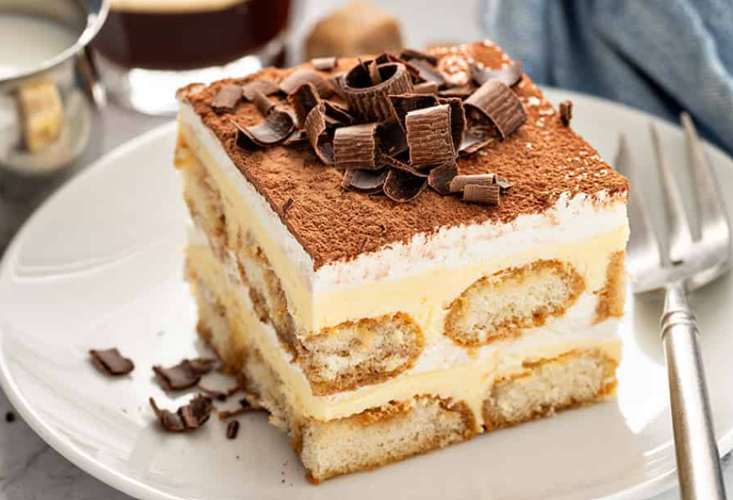

1 / 6
Cafe
2 / 6

Interior
3 / 6
Dining
4 / 6

tiramisu
5 / 6
croissants
6 / 6
hot chocolate
Welcome to our restaurant! We pride ourselves on serving delicious authentic french food.
"Welcome to The French Beanary Café , a charming corner of France nestled in the heart of Banglore. Our café embodies the essence of French culture,
offering a delightful blend of rich aromas, exquisite flavors, and a warm, inviting ambiance.
At The French Beanary Café , we pride ourselves on serving authentic French delicacies, from freshly baked croissants and fluffy pastries and artisanal coffee brewed to perfection.
Each dish is crafted with care, honoring traditional recipes passed down through generations.
Our cozy café provides a serene escape where patrons can savor the art of French gastronomy while immersing themselves in the rustic elegance of French décor.
Whether you're seeking a leisurely breakfast, a quick espresso, or a leisurely afternoon with friends,
The French Beanary Café invites you to experience the charm and taste of France right here in Banglore.
For reservations, please call: 123-456-7890 / book online